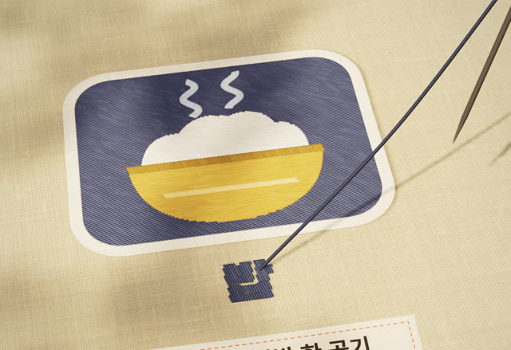
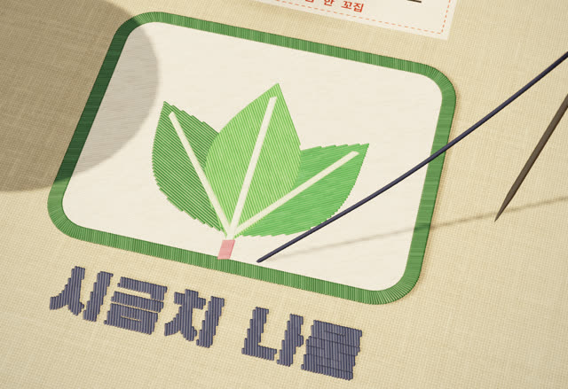
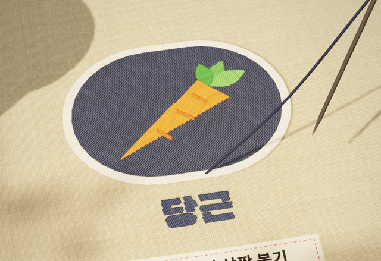
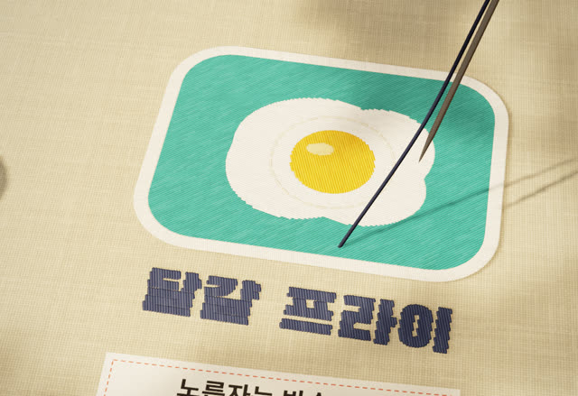
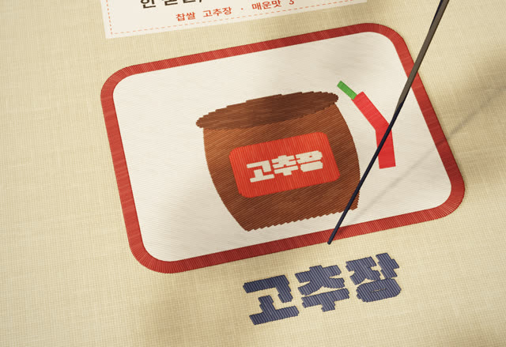
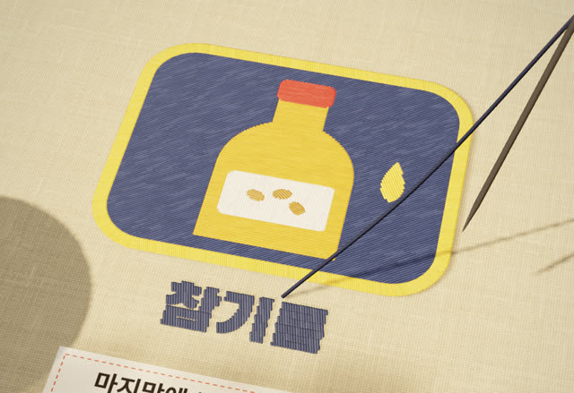
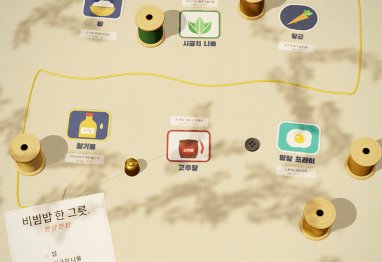
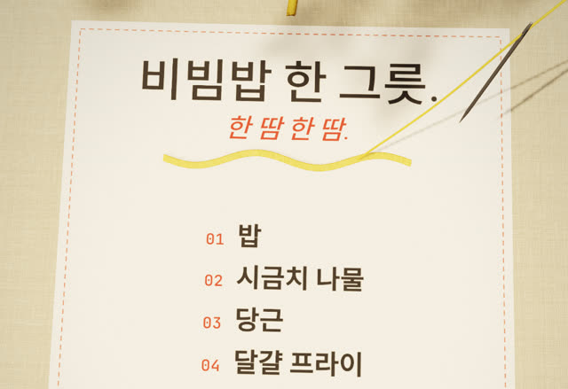

작업 흐름
- 입력
- 주제 하나와 그 목록 (도구, 레시피 재료, 코스, 라인업, 단계, 메뉴 …)
- 브리프
- 항목마다 제목 · 태그 문구 · 패치 아이디어, 바탕 모양과 색, 바느질 순서, 팔레트, 아웃트로 문구
- 패치 설계
- 사각 · 원 · 다각형 · SVG 경로 · 글자 · 새틴 줄 · 홈질로 항목마다 새로 그린 패치, 땀 방향과 테두리
- 검사
- check.mjs: 바느질 완료 · 화면 안 구도 · 글자 크기 · 바늘의 디딤과 예비 동작 · 카메라 매끄러움 · 밝기, 스틸 검토
- 출력
- 라이브 HTML 페이지와 1080×1350 MP4
node embroidery-reel/scripts/new-reel.mjs my-reel --title "제목"
node embroidery-reel/scripts/check.mjs my-reel
node embroidery-reel/scripts/render.mjs my-reel --items
node embroidery-reel/scripts/render.mjs my-reel # → out/my-reel.mp4요구 사항: Node + Playwright Chromium (GPU 없이 SwiftShader), ffmpeg. 단계별 순서는 SKILL.md에 있습니다.
샘플
예제와 스타터에서 항목마다 태그가 내려앉은 순간입니다. 카드를 누르면 라이브 페이지가 그 순간에 멈춘 채 열립니다(클릭 · 스페이스로 재생).
비빔밥 한 그릇 새 주제로 만든 예제 · 재료 6가지 · 21초
원본에 없는 주제입니다. 그릇에 들어가는 순서대로 밥 · 나물 · 당근 · 달걀 · 고추장 · 참기름을 한 장씩 수놓고, 금실로 이어 목록 카드로 끝납니다.

밥 · 2초밥놋그릇의 흰쌀밥과 김, 남색 바탕에 크림색 테두리

시금치 나물 · 4초시금치 나물한 뿌리에서 올라온 잎 세 장, 연한 잎맥

당근 · 7초당근결을 따라 놓은 땀, 잎이 달린 당근

달걀 프라이 · 9초달걀 프라이청록 바탕, 반숙 노른자와 홈질 테

고추장 · 11초고추장옹기와 「고추장」 라벨까지 수놓음

참기름 · 13초참기름호박색 병, 참깨 라벨, 기름 한 방울

아웃트로 · 17초금실로 잇기줄 사이 틈을 따라 누빈 금실

끝 카드 · 21초비빔밥 한 그릇.목록과 수놓은 밑줄
A small morning 스타터 · 항목 3개 · 14초
가장 작은 릴입니다. 바탕 모양과 색을 항목마다 바꾸고, 두 번째 항목은 태그를 위에 둡니다.
실제 작품
이 레포에서 만든 스킬입니다. 원본 게시물의 영상을 보고 스타일을 가져와, 원본에 없는 주제로 처음부터 끝까지 만들었습니다.
링크
- SKILL.md 워크플로
- 폴더 lib · scripts · references · starter · examples
- README.md 빠른 시작
- references/BRIEF.md 브리프 틀과 스틸 검토
- references/KIT.md 도형 · 항목 · 영상 옵션
- references/LOOK.md 땀 · 테이블 · 빛 · 렌즈 · 카메라 · 바늘
- references/SOURCE.md 원본에서 가져온 것과 가져오지 않은 것
- references/LESSONS.md 겪은 문제와 해결